Sorphera: the whole globe
Review revision evidence, 13 October 2026. The blue/pink main ball and pink/cream bonus share the photo-derived mesh, felt and raised applique through a full turn.
Normal-speed reveal, WebGL
Uninterrupted entry, turn, stop, hold, landing and the separate NFT tie-break. Muted by default. 960×760, 25 fps, 24.48 seconds.
Sequence description: three blue balls enter with their badges facing away, rotate, stop on 7, 12 and 19, hold and travel to their slots. The pink bonus follows on 4. The sample then requests a separate tie-break before confirming ticket 118. These are supplied simulation results.
Normal-speed reveal, software fallback
The same interaction with WebGL disabled. 960×760, 25 fps, 22.64 seconds.
The clips preserve original timestamps. Headless rendering has occasional stalls; 25 fps encoding does not promise 25 unique rendered frames every second. Actual frame intervals and phase timings are included. No acceleration, cut or image swap hides the back.
Actual picker and draw sizes
Reference, front (0°), side (90°), back (180°) and opposite side (270°). Rows use 43/59px picker and 140/170px draw sizes for both palettes. Sheets below retain their native pixel dimensions; scroll within the sheet or open the image.
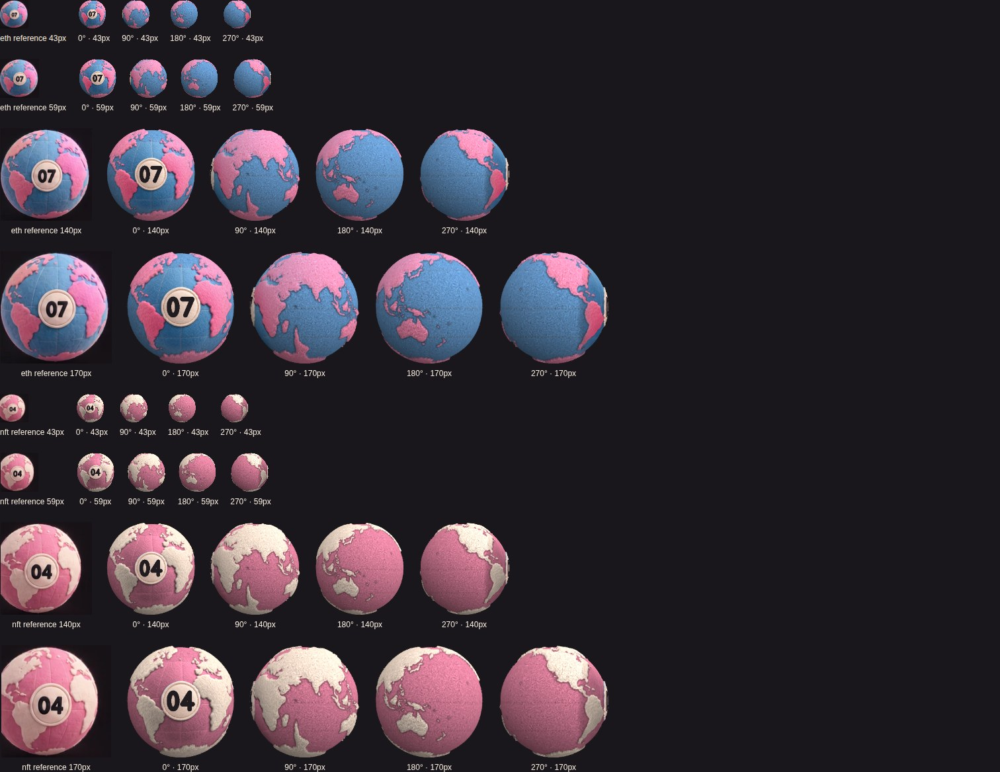
Full turns and poles
Each palette at 0°, 45°, 90°, 135°, 180°, 225°, 270° and 315°, followed by north and south pole views. The front badge is not duplicated on the unseen hemisphere.
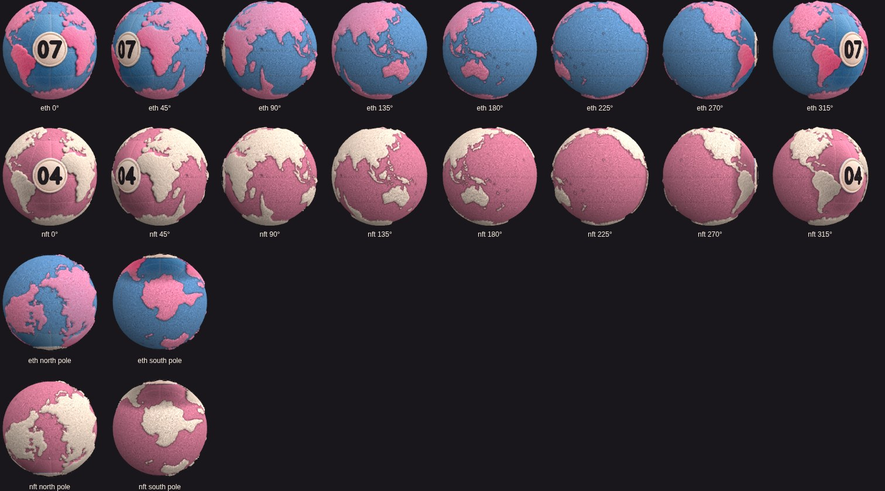
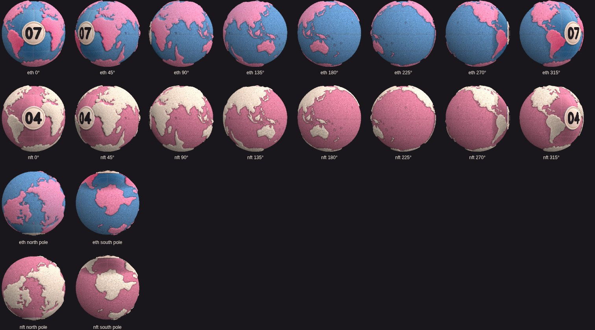
Polar filtering revision, at 256px
Each row shows blue north, blue south, pink north and pink south. The original longitude mip footprint blurred the centres into spokes. The revised renderer samples the same albedo through continuous planar coordinates at the caps, retaining trilinear filtering and antialiasing.
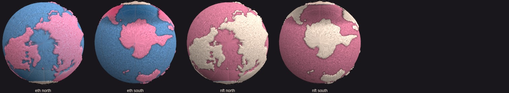
Schedules and checkout
Controlled-clock screenshots use America/New_York, with EDT labels and UTC values internally. The countdowns are factual simulated schedule data; no result appears at zero.
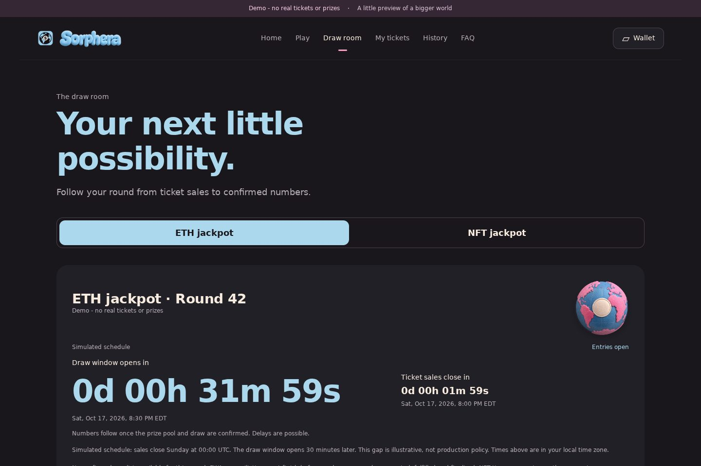

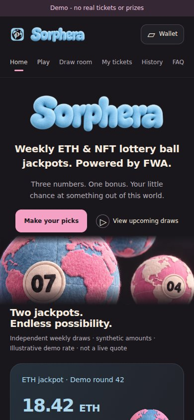


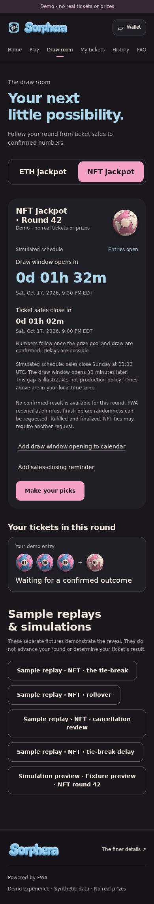

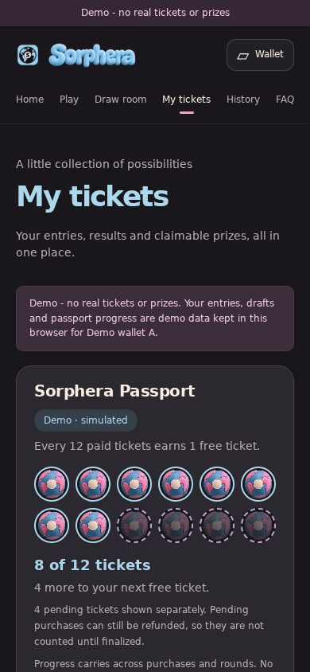

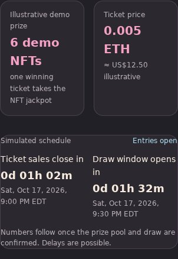

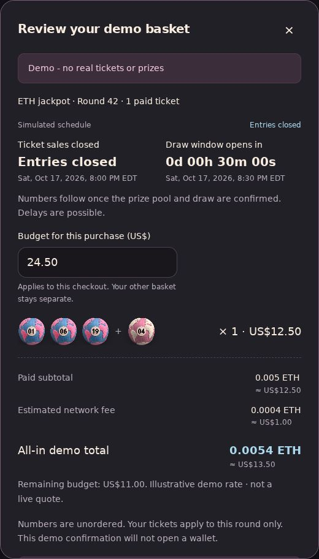
Captured draw-window event · Captured sales-closing event. These test captures contain a local preview URL; the website generates the exact link for the host where it runs.

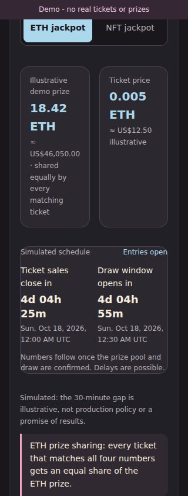

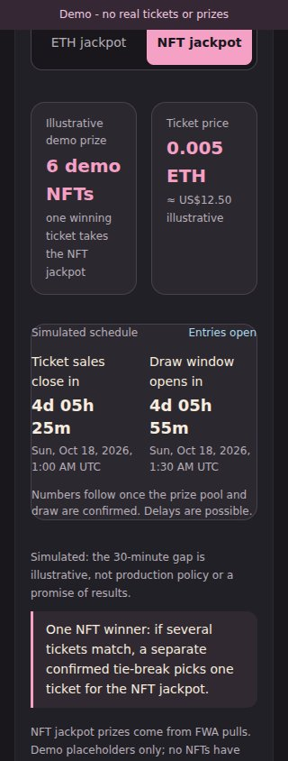
Full results, six-domain design review, source findings and limitations.